생산자동화산업기사 (2017-03-05 기출문제)
1과목: 기계가공법 및 안전관리
1. 선반에서 맨드릴(mandrel)의 종류가 아닌 것은?
- 갱 맨드릴
- 나사 맨드릴
- 이동식 맨드릴
- 테이퍼 맨드릴
(정답률: 51%)

2. 일감에 회전운동과 이송을 주며, 숫돌을 일감표면에 약한 압력으로 눌러 대고 다듬질할 면에 따라 작고 빠른 진동을 주어 가공하는 방법은?
- 래핑
- 드래싱
- 드릴링
- 슈퍼 피니싱
(정답률: 69%)
3. 선반의 주요 구조부가 아닌 것은?
- 베드
- 심압대
- 주축대
- 회전 테이블
(정답률: 65%)
4. 절삭공작기계가 아닌 것은?
- 선반
- 연삭기
- 플레이너
- 굽힘 프레스
(정답률: 78%)
5. 상향절삭과 하향절삭에 대한 설명으로 틀린 것은?
- 하향절삭은 상향절삭보다 표면거칠기가 우수하다.
- 상향절삭은 하향절삭에 비해 공구의 수명이 짧다.
- 상향절삭은 하향절삭과는 달리 백래시 제거장치가 필요하다.
- 상향절삭은 하향절삭할 때보다 가공물을 견고하게 고정하여야 한다.
(정답률: 78%)
6. 드릴 머신으로서 할 수 없는 작업은?
- 널링
- 스폿 페이싱
- 카운터 보링
- 카운터 싱킹
(정답률: 76%)
7. 선반을 설계할 때 고려할 사항으로 틀린 것은?
- 고장이 적고 기계효율이 좋을 것
- 취급이 간단하고 수리가 용이할 것
- 강력 절삭이 되고 절삭 능률이 클 것
- 기계적 마모가 높고, 가격이 저렴할 것
(정답률: 86%)
8. 일반적인 손다듬질 작업 공정순서로 옳은 것은?
- 정→줄→스크레이퍼→쇠톱
- 줄→스크레이퍼→쇠톱→정
- 쇠톱→정→줄→스크레이퍼
- 스크레이퍼→정→쇠톱→줄
(정답률: 73%)
9. 20℃에서 20mm인 게이지 블록이 손과 접촉 후 온도가 36℃가 되었을 때, 게이지 블록에 생긴 오차는 몇 mm인가? (단, 선팽창계수는 1.0×10-6/℃이다.)
- 3.2×10-4
- 3.2×10-3
- 6.4×10-4
- 6.4×10-3
(정답률: 54%)
10. CNC기계의 움직임을 전기적인 신호로 속도와 위치를 피드백하는 장치는?
- 리졸버(resolver)
- 컨트롤러(controller)
- 볼 스크루(ball screw)
- 패리티 체크(parity-check)
(정답률: 74%)
11. 밀링작업의 단식 분할법에서 원주를 15등분 하려고 한다. 이 때 분할대 크랭크의 회전수를 구하고, 15구멍열 분할판을 몇 구멍씩 보내면 되는가?
- 1회전에 10구멍씩
- 2회전에 10구멍씩
- 3회전에 10구멍씩
- 4회전에 10구멍씩
(정답률: 62%)
12. 기어 절삭기에서 창성법으로 치형을 가공하는 공구가 아닌 것은?
- 호브(hob)
- 브로치(broach)
- 래크 커터(rack cutter)
- 피니언 커터(pinion cutter)
(정답률: 73%)
13. 삼각함수에 의하여 각도를 길이로 계산하여 간접적으로 각도를 구하는 방법으로 블록게이지와 함께 사용하는 측정기는?
- 사인 바
- 베벨 각도기
- 오토 콜리메이터
- 콤비네이션 세트
(정답률: 75%)
14. 절삭공구의 절삭면에 평행하게 마모되는 현상은?
- 치핑(chiping)
- 플랭크 마모(flank wear)
- 크레이터 마모(creat wear)
- 온도 파손(temperature failure)
(정답률: 73%)
15. 그림에서 플러그 게이지의 기울기가 0.⑤일 때, M2의 길이[mm]는? (단, 그림의 치수단위는 mm이다.)
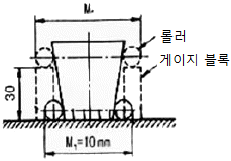
- 10.5
- 11.5
- 13
- 16
(정답률: 53%)
16. 구멍가공을 하기 위해서 가공물을 고정시키고 드릴이 가공 위치로 이동할 수 있도록 제작된 드릴링 머신은?
- 다두 드릴링 머신
- 다축 드릴링 머신
- 탁상 드릴링 머신
- 레이디얼 드릴링 머신
(정답률: 64%)
17. 드릴작업에 대한 설명으로 적절하지 않은 것은?
- 드릴작업은 항상 시작할 때보다 끝날 때 이송을 빠르게 한다.
- 지름이 큰 드릴을 사용할 때는 바이스를 테이블에 고정한다.
- 드릴은 사용 전에 점검하고 마모나 균열이 있는 것은 사용하지 않는다.
- 드릴이나 드릴 소켓을 뽑을 때는 전용공구를 사용하고 해머 등으로 두드리지 않는다.
(정답률: 83%)
18. 주축의 회전운동을 직선 왕복운동으로 변화시킬 때 사용하는 밀링 부속장치는?
- 바이스
- 분할대
- 슬로팅 장치
- 래크 절삭 장치
(정답률: 59%)
19. 나사연삭기의 연삭방법이 아닌 것은?
- 다인 나사연삭 방법
- 단식 나사연삭 방법
- 연식 나사연삭 방법
- 센터리스 나사연삭 방법
(정답률: 42%)
20. 연삭 숫돌의 표시에 대한 설명이 옳은 것은?
- 연삭입자 C는 갈색 알루미나를 의미한다.
- 결합체 R은 레지노이드 결합제를 의미한다.
- 연삭 숫돌의 입도 #100이 #300보다 입자의 크기가 크다.
- 결합도 K 이하는 경한 숫돌, L~O는 중간 정도 숫돌, P 이상은 연한 숫돌이다.
(정답률: 63%)
2과목: 기계제도 및 기초공학
21. 다음 중 억지 끼워 맞춤에 해당하는 것은?
- H7/g6
- H7/s6
- H7/k6
- H7/m6
(정답률: 61%)
22. 도면 부품란의 재료기호에 기입된 'SPS6'은 어떤 재료를 의미하는가?
- 스프링 강재
- 스테인리스 압연강재
- 냉간압연 강판
- 기계구조용 탄소강재
(정답률: 67%)
23. 그림과 같은 도면에서 평면도로 가장 적합한 것은?
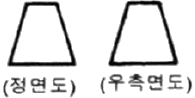
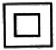
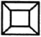
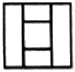
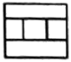
(정답률: 80%)
24. 나사의 종류를 표시하는 기호가 잘못 연결된 것은?
- 30도 사다리꼴 나사 : TW
- 유니파이 보통 나사 : UNC
- 유니파이 가는 나사 : UNF
- 미터 가는 나사 : M
(정답률: 69%)
25. 구름 베어링의 호칭 번호가 6001일 때 안지름은 몇 mm인가?
- 10
- 11
- 12
- 13
(정답률: 59%)
26. 다음 도면 배치 중에서 제3각법에 의한 배치 내용이 아닌 것은?
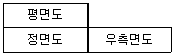
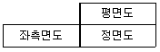
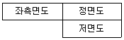
(정답률: 73%)
27. 축의 도시방법에 관한 설명으로 틀린 것은?
- 축의 구석부나 단이 형성되어 있는 부분에 형상에 대한 세부적인 지시가 필요할 경우 부분 확대도로 표시할 수 있다.
- 긴축은 단축하여 그릴 수 있으나 길이는 실제 길이를 기입해야 한다.
- 축은 일반적으로 길이방향으로 단면 도시하여 나타낼 수 있다.
- 축의 절단면은 90도 회전하여 회전도시 단면도로 나타낼 수 있다.
(정답률: 64%)
28. 가상선의 용도에 대한 설명으로 틀린 것은?
- 인접부분을 참고로 표시하는 선
- 공구, 지그 등의 위치를 참고로 표시하는 선
- 가동부분의 이동한계 위치를 표시하는 선
- 가공면이 평면임을 나타내는 선
(정답률: 65%)
29. 가공 방법에 관한 약호에서 스크레이퍼 가공을 의미하는 것은?
- FR
- FL
- FF
- FS
(정답률: 75%)
30. 배관도면에서 다음과 같이 배관이 표시되었을 때 이에 관한 설명 중 잘못된 것은?
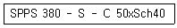
- 압력배관용 탄소강관이다.
- 호칭 지름은 50이다.
- 호칭 두께는 Sch40이다.
- 열간 가공하여 이음매 없는 강관이다.
(정답률: 64%)
31. 전동축의 전달 동력을 H[kW], 회전수를 n[rpm]이라할 때, 전달토크 T[Nㆍmm]를 구하는 식으로 옳은 것은?
- 9.55×103H/n
- 9.55×106H/n
- 9.74×104H/n
- 9.74×105H/n
(정답률: 46%)
32. 응력에 대한 설명 중 틀린 것은?
- 물체에 작용하는 하중과 응력은 비례관계에 있다.
- 작용하중이 일정할 때 면적이 크면 응력은 커진다.
- 단위 면적당 재료의 내부에서 저항하는 힘의 크기를 말한다.
- 응력이 단면에 직각으로 작용할 때 이것을 수직응력이라 한다.
(정답률: 64%)
33. 다음 회로의 합성저항[kΩ]은? (단, R1=2kΩ, R2=3kΩ, R3=6kΩ이다.)
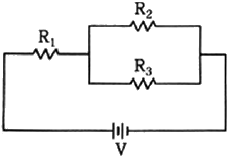
- 3.5
- 4
- 4.5
- 5
(정답률: 67%)
34. 단면적이 A인 관로에서 시간 t 동안 v속도로 유출되는 물의 양을 V라고 할 때 V를 구하는 식으로 옳은 것은?
- Aㆍu/t
- Aㆍt/u
- Aㆍuㆍt
- π/4ㆍA2ㆍuㆍt
(정답률: 65%)
35. 물체에 작용하는 힘의 3요소에 속하지 않는 것은?
- 힘의 방향
- 힘의 크기
- 힘의 작용점
- 힘의 작용시간
(정답률: 76%)
36. 유체 연속의 법칙에 대한 설명 중 틀린 것은? (단, 유체의 밀도는 변하지 않는다.)
- 유량은 단면적의 크기에 따라서 변한다.
- 유체가 흐르는 단면적이 작아지면 속도는 빨라진다.
- 유체가 흐르는 단면적이 커지면 유체의 속도가 느려진다.
- 정상흐름 상태에서 임의의 단면을 통과하는 유량은 일정하다.
(정답률: 61%)
37. 다음 그림과 같이 3개의 저항이 병렬로 접속된 회로에서 저항 R3에 흐르는 전류 I3[A]은?
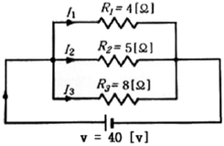
- 5
- 8
- 10
- 23
(정답률: 68%)
38. 다음 시간에 따른 물체의 위치에 관한 식에서 t를 3으로 두었을 때 속도는? (단. t : 시간, x : 물체의 위치이다.)
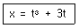
- 6
- 18
- 30
- 36
(정답률: 56%)
39. 축의 회전수를 n, 전달되는 동력을 H라 할 때 회전모멘트 T[Nㆍm]는?
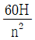
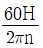
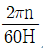
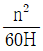
(정답률: 66%)
40. 교육에 있어서 학습평가의 기본 기준에 해당되지 않는 것은?(오류 신고가 접수된 문제입니다. 반드시 정답과 해설을 확인하시기 바랍니다.)
- 타당도
- 신뢰도
- 주관도
- 실용도
(정답률: 39%)
3과목: 자동제어
41. 다음 컴퓨터 구성장치 중 입력장치가 아닌 것은?
- OMR(Optical Mark Reader)
- OCR(Optical Character Reader)
- COM(Computer Output Microfilmer)
- MICR(Magnetic Ink Character Reader)
(정답률: 68%)
42. 동기기형 서보전동기에 관한 설명으로 틀린 것은?
- 신뢰성이 높다.
- 시스템이 간단하고 저가이다.
- 고속, 고토크 이용이 가능하다.
- 브러시가 없어 보수가 용이하다.
(정답률: 57%)
43.
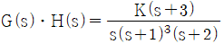
에서 근궤적인 수는?- 4
- 5
- 6
- 7
(정답률: 55%)
44. 회전형 공기압축기가 아닌 것은?
- 베인 형
- 스크루 형
- 스크롤 형
- 다이어램프 형
(정답률: 67%)
45. 공압장치의 구성기기가 아닌 것은?
- 공기 탱크
- 서비스 유닛
- 애프터 쿨러
- 어큐물레이터
(정답률: 69%)
46. 제어계의 과도 응답을 조사하는 데 사용되는 입력은?
- 램프 함수
- 사인 함수
- 포물선 함수
- 단위 계수 함수
(정답률: 59%)
47. 다음 중 생산공정이나 기계장치 등을 자동화하였을 때 효과로 가장 거리가 먼 것은?
- 인건비 감소
- 생산속도 증가
- 제품 품질의 균일화
- 생산 설비의 수명 감소
(정답률: 81%)
48. 다음 FND로 숫자 ‘2’를 표시하고자 할 때 옳은 데이터는?
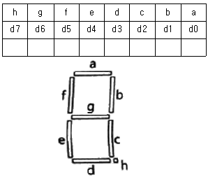
- 4AH
- 4BH
- 5AH
- 5BH
(정답률: 56%)
49. 제어계가 안정하려면 특성 방정식의 근이 다음 그림과 같은 s-평면에서 어느 곳에 위치하여야 하는가?
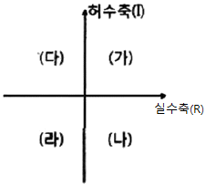
- (가), (나)
- (가), (다)
- (나), (라)
- (다), (라)
(정답률: 65%)
50. 전자력을 이용하여 유체의 방향을 제어하는 밸브 조작 방식으로 사용되는 것은?
- 수동 방식
- 공기압 방식
- 기계 작동 방식
- 솔레노이드 방식
(정답률: 82%)
51. 제어의 종류를 제어량에 따라 분류했을 때 다음 중 공정제어와 가장 관계가 먼 것은?
- 위치제어
- 유량제어
- 온도제어
- 액면제어
(정답률: 49%)
52. 제어 대상의 제어량을 제어하기 위하여 제어 요소를 만들어내는 회전력, 열, 수증기, 빛 등과 같은 것으로 제어요소가 제어대상에 주는 신호는?
- 목표값
- 제어량
- 조작량
- 동작신호
(정답률: 55%)
53. 리셋 신호가 들어오지 않은 상태에서 입력 신호가 몇 번 들어 왔는가를 계수하여 설정값이 되면 출력을 내보내는 PLC의 기능으로 옳은 것은?
- 로드
- 함수
- 카운터
- 타이머
(정답률: 79%)
54. 출력이 0.5mV/℃인 열전대 센서에서 0~200℃의 온도 범위를 분해능 0.5℃로 측정하고자 할 때, 필요한 A/D 변환기의 최소비트수는?
- 6
- 7
- 8
- 9
(정답률: 39%)
55. PLC의 통신 중 RS-422방식에 대한 설명으로 틀린 것은?
- 1byte 단위로 data가 전송된다.
- 전송속도가 느리나 소프트웨어가 간단하다.
- 데이터를 1개의 케이블을 통해 1bit씩 전송된다.
- RS-232C에 비해 전송길이가 길고 1:N 접속이 가능하다.
(정답률: 54%)
56. 순자 제어시스템과 되먹임 제어시스템을 비교하는 경우 되먹임 제어시스템에만 있는 구성요소는?
- 비교부
- 조작부
- 조절부
- 출력부
(정답률: 75%)
57. 무접점시퀀스회로 구성에서 검출기로부터 신호를 받아서 제어대상에 어떠한 조작을 가할 것인가라는 것을 판단하고 조작기기에 명령을 내리는 회로는?
- 논리회로
- 입력회로
- 제어회로
- 출력회로
(정답률: 49%)
58. 8bit 데이터 버스 D0~D7를 통해서 전송되는 데이터 값이 95H이다. 데이터 버스 각 핀의 신호 중 High(ON 또는 1)가 아닌 신호 핀은?
- D0
- D2
- D4
- D6
(정답률: 58%)
59. 그림에서 R(s)=101, C(s)=10일 때 전달 함수 G의 값은?
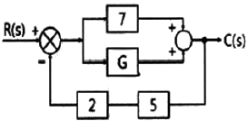
- 3
- 6
- 9
- 12
(정답률: 54%)
60. DC모터에 대한 설명으로 틀린 것은?
- 가격이 저렴하고 기동 토크가 크다.
- 입력 주파수에 따라 속도가 가변된다.
- 브러시에 의한 노이즈 발생이 심하다.
- 인가전압에 따른 회전측성이 직선적이다.
(정답률: 49%)
4과목: 메카트로닉스
61. 2진수 100110의 2의 보수는?
- 011001
- 011010
- 100111
- 111000
(정답률: 63%)
62. 다음 A/D 변환기중 변환속도가 가장 빠른 것은?
- 계수 비교형
- 병렬 비교형
- 이중 적분형
- 축차 비교형
(정답률: 61%)
63. 반사형 포토센서의 특징으로 틀린 것은?
- 응답속도가 빠르다.
- 검출 정밀도가 좋다.
- 신뢰성이 좋고 수명이 길다.
- 먼지나 연기가 많은 환경에서도 사용에 문제가 없다.
(정답률: 83%)
64. 2진수 101.1을 10진수로 나타내면 얼마인가?
- 5.25
- 5.5
- 6.25
- 6.5
(정답률: 68%)
65. 어드레스 핀이 10개, 데이터 핀이 8개인 메모리의 용량은 몇 bit인가?
- 512
- 1024
- 4028
- 8192
(정답률: 53%)
66. 나사의 종류에 따른 기호의 연결이 틀린 것은?
- 미니추어 나사-S
- 미터 보통 나사-M
- 유니파이 가는 나사-UNF
- 유니파이 보통 나사 - CTG
(정답률: 75%)
67. 다음 중 주변 장치와 메모리 사이에 고속의 데이터 전송이 필요할 때 적합한 방식은?
- 폴링
- DMA전송
- 핸드쉐이킹
- 인터럽트 전송
(정답률: 55%)
68. 도체를 관통하는 자속의 변화로 도체에 전압이 발생하는 현상의 명칭은?
- 홀효과
- 자기유도
- 전자유도
- 핀치효과
(정답률: 52%)
69. 코일에 흐르는 전류가 변화할 때, 변화하는 자계로 인해 유도전압이 벌생하고 유도전압의 방향은 항상 전류의 변화를 방해하는 방향으로 결정된다는 유도전압의 방향을 정의한 법칙은?
- Lenz 법칙
- Gauss의 법칙
- Weber의 법칙
- Faraday의 법칙
(정답률: 63%)
70. 에너지와 같은 단위를 사용하는 물리량은?
- 저항
- 전류
- 전압
- 전력량
(정답률: 70%)
71. 전기자와 계자에 별도의 전원을 사용한 DC 서보 모터로 제어성이 우수하며, 대용량 서보모터에 적합한 형은?
- 복권형
- 분권형
- 직권형
- 타여자형
(정답률: 52%)
72. 사인바에 의한 테이퍼 측정 시 불필요 한 장치는?
- 측장기
- 게이지 블록
- 다이얼 게이지
- 테이퍼 플러그 게이지
(정답률: 43%)
73. 고정자 측에 영구자석을 배치하여 공극부에 직류 바이어스 자계를 발생시켜 제어하는 스테핑 모터는?
- 영구 자석형
- 하이브리드형
- 반영구 자석형
- 가변 릴럭턴스 형
(정답률: 60%)
74. 자기장 내에 있는 도체에 전류를 흐르게 하면 발생되는 힘 F[N]는? (단, B : 자속밀도, l : 도체의 길이, I : 전류, θ : 자기장과 도체가 이루는 각도이다.)
- F=BIlsinθ
- F=BIlcosθ
- F=BIltanθ
- F=BIltan-1θ
(정답률: 63%)
75. RISC(Reduced Instruction Set Computing) 구조의 마이크로프로세서 설명 중 틀린 것은?
- 명령어 개수가 적다.
- 명령어 수행 속도가 느리다.
- 명령어는 단일 사이클로 실행된다.
- 명령어가 고정된 길이 명령어를 사용한다.
(정답률: 57%)
76. 로봇 팔의 구동뿐만 아니라 기계의 위치, 속도, 가속도 등의 정밀 제어를 필요로 하는 기계구동에 사용되는 제어는?
- 공정 제어
- 서보 제어
- 개루프 제어
- 플랜트 제어
(정답률: 79%)
77. 온도의 변화에 따른 저항이 변화되는 특징을 이용한 센서는?
- 광전소자
- 서미스터
- 마그네틱 센서
- 스트레인 게이지
(정답률: 81%)
78. 센서는 일반적으로 비선형 신호를 출력하며 같은 센서라도 그 측정값의 변화량에 따라 변형되는 출력의 크기가 범위에 따라 다르므로 이것을 그대로 이용하기는 매우 어렵다. 이를 해결하기 위한 방법은?
- 디지털 변환
- 신호의 정렬
- 신호의 증폭
- 신호의 선형화
(정답률: 65%)
79. 전기적 에너지를 기계적인 진동 에너지로 변환시켜 금속, 비금속 등의 재료에 관계없이 정밀가공이 가능한 가공방법은?
- 밀링 가공
- 선반 가공
- 연삭 가공
- 초음파 가공
(정답률: 78%)
80. 다음 그림과 같이 1대의 컴퓨터로 여러 대의 CNC공작기계를 제어하는 구조의 시스템은?
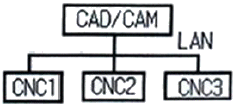
- DNC
- FMC
- FMS
- CIMS
(정답률: 64%)